■ホーム
水戸のピアノｺﾝｻｰﾄ
水戸小野ピアノ・音楽教室
無料体験レッスン
■ご挨拶
教育理念
指導方針
■水戸小野ピアノ教室
講師プロフィール
■水戸小野ピアノレッスン
ピアノ一般コース
ピアノ専門コース
（音高・音大生、講師）
ソルフェージュ
生徒さんの声
発表会・交流会
ｺﾝｸｰﾙ・ｵｰﾃﾞｨｼｮﾝ
受験（音高、音大）
資格
（ｸﾞﾚｰﾄﾞ・保育士・教員）
指導実績
フランス留学
■アクセス
■お問合せ
FAQ(よくある質問）
■講師募集
■音楽リンク
水戸芸術館
茨城県民文化センター
水戸奏楽堂
ピティナ指導者協会
成功するﾌﾗﾝｽ留学
ﾌﾗﾝｽ音楽学校
ﾊﾟﾘ・ｴｺｰﾙﾉﾙﾏﾙ音楽院

茨城県水戸市天王町029-225-0272
piano.class@ono-piano.com
★教室紹介動画
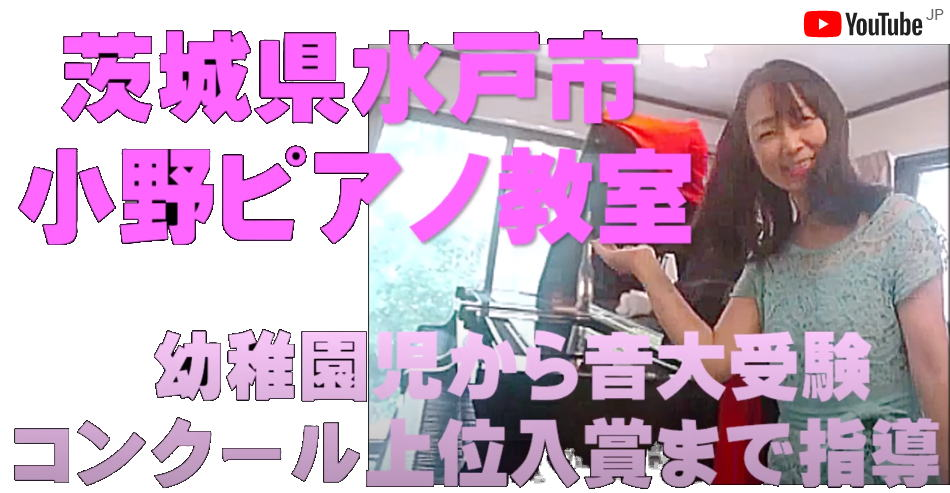
|
 |
水戸市のピアノ・音楽教室です！
|
|
|
|
|
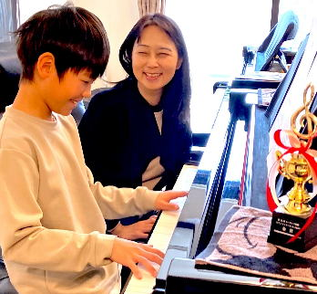
|
『ピアノ・音楽って楽しい』そう思えるレッスンを心がけ、一人一人のやる気を育み、夢に向かって、意欲的に自ら学ぶ姿勢を育てています。
ぜひ当教室で、ピアノ.音楽を通して喜びと感動を味わって頂けたらと思います。 |
|
お問い合わせは、Line、電話、メールで！！
↓クリックしてね！
最新のレッスン風景もぜひご覧ください．
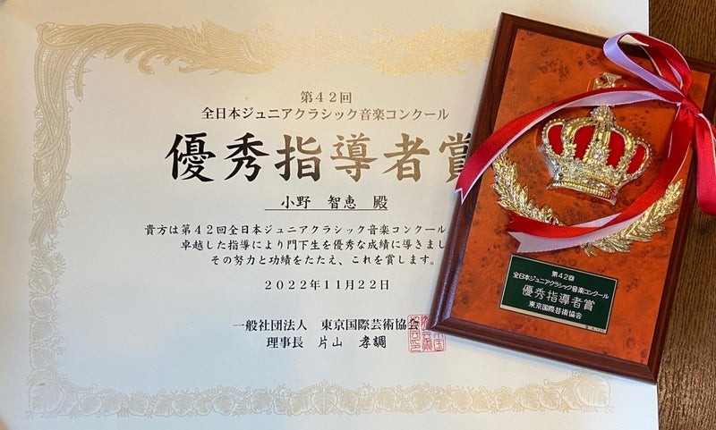
東京国際芸術協会より優秀指導者賞を受賞しました。
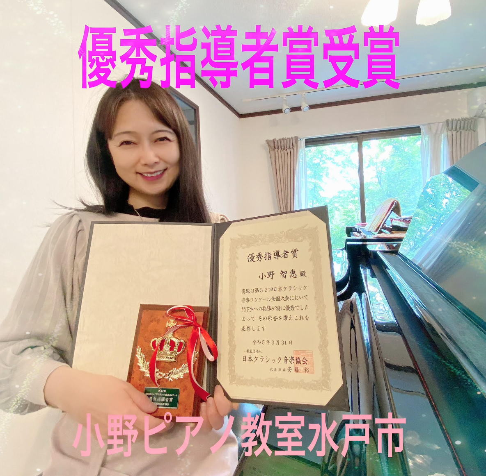
日本クラシック音楽協会より優秀指導者賞を受賞しました。
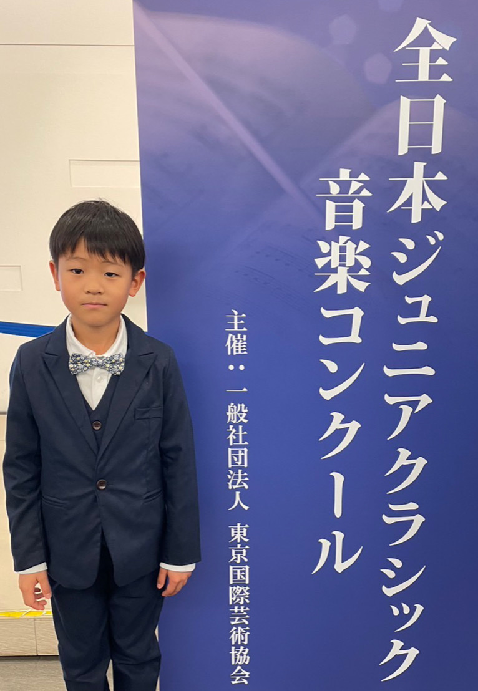
全日本ジュニアクラシック音楽コンクール全国大会にて
第5位を受賞しました。
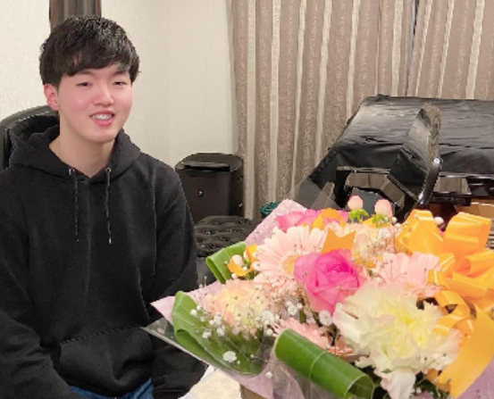
東京音楽大学ピアノ演奏家コースに合格しました。
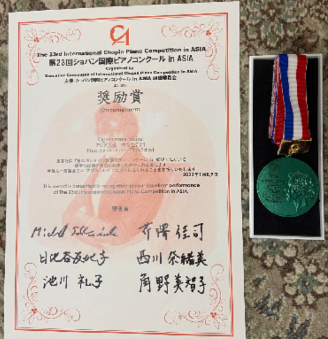
ショパン国際ピアノコンクールinアジア大会にて
奨励賞を受賞しました。
日本クラシック音楽コンクール 全国大会で生徒さんが
第3位（2位なし）を受賞しました
前年は第2位（1位なし）を受賞し、
2年連続の上位入賞を果たしました
毎年、各音楽コンクールの、全国大会にて、
入賞、入選者を輩出しています。
併せて水戸市教育長賞も2年連続、Ｗ受賞されました。
おめでとうございます！
ヤマハS4のグランドピアノをお譲り頂きました。
|
|
実力派講師陣による丁寧でやさしいレッスン
|
|
|
ピアノ上達の鍵は、指導力・演奏力のある先生につくことです。 当教室では、国内外の音大卒の講師陣が、ピアノを楽しく指導します。ピアノ演奏の技術が優れているのはもちろんですが、 指導資格（ カワイ・ヤマハ指導・演奏ｸﾞﾚｰﾄﾞ、パリ・エコールノルマル音楽院の演奏家・教育家資格など ）や指導実績豊富な講師陣が生徒様のピアノの上達をサポートします。
幼稚園生から大人の方まで、どなたにでも、優しく、丁寧がモットーです。
当教室では、音高、音大合格者やコンクール全国入賞者を輩出しており、ご希望により一流ピアニストの特別レッスンも受けられます。
|
|
幼児期に絶対音感を身につけませんか？
|
|
当教室は、幼児期の音感教育に力を注いでおり、楽しみながら絶対音感を育てるレッスンをしております。3歳～小学低学年くらいまでに、講師の適切な指導により、絶対音感の基礎能力が身につき、継続することにより、音楽的才能として開花していきます。
当教室は、ピアノと並行して、時間の許す限り、歌、リトミック、リズム遊び、音当て、聴奏と、ワークドリルも指導していますので、ソルフェージュ、音感、楽典、読譜能力も身につきます。
何気なく始めたピアノレッスンが数年後には、ピアニストやピアノの先生になりたいという将来の夢に変わっている生徒さんも数多くいます。
ピアノ歴3か月半の年中さん、こんなに上手になりました。
ピアノ歴4か月の年中さん、読譜力が身についてきました。
|
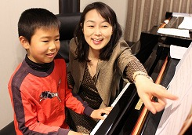 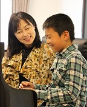
|
|
お楽しみ会や発表会など楽しいイベント
|
|
生徒様が意欲をもって励む発表会やお子様も大人の生徒様も楽しめるイベントを開催しております。生徒様同士の交流の場を設けることにより、ピアノ演奏に対する好奇心とやる気、インセンティブを高め、ピアノを楽しく継続できるようになります。
|
|
広々とした防音室でのびのびレッスン
|
|
レッスン室は、広々とした完全防音室でグランドピアノ4台、アップライトピアノ1台の他、本番用の照明を完備しており、充実した環境で、レッスンが受けられます。
|
|
当教室との出会いによりピアノが将来の夢に
|
|
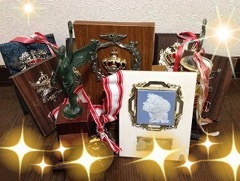 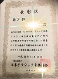
|
|
☆お問合せ・無料体験レッスン
|
|
当音楽教室は、幼稚園生6600円からの料金設定となっております。生徒様のご希望や目標などをお伺いし、レッスンを進めております。またご希望の方には、見学＆無料体験レッスンも致します。レッスンは毎日（日・月・火・水・木・金・土）行っており、2・3歳のお子様から大人の方まで幅広い年齢の生徒様にお通い頂いております。
まずは、お電話029-225-0272またはお問い合せフォームにて、ご相談下さい。
|
|
|
☆What's New
|
|
・1時間のﾚｯｽﾝ料金で家族（３～５人）で１時間ﾚｯｽﾝをシェアするﾌｧﾐﾘ-ﾚｯｽﾝを新設しました。詳しくはお電話にてお問合せ下さい。
・お楽しみ交流会を開催しています。ﾋﾟｱﾉの弾き合いや歌、聴音などのｿﾙﾌｪｰｼﾞｭで総合的に音楽を学び、後半は、トランプやかるた等で遊ぶ会です。ﾋﾟｱﾉを通じて皆さんと楽しい交流の輪・和を持っています。
・レッスンと子育てで学んだことをブログに綴ってみました。
|
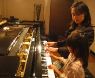 幼少期から、大学でピアノの専門知識を学んだ講師が、お子様1人1人の個性に合わせてアドバイス致します。 この時期の適切な指導により、絶対音感の基礎能力が身につきます。この能力は、環境と指導により、音楽的才能として開花していきます。
何気なく始めたピアノレッスンが、数年後には、ピアノと共に将来の夢や希望に繋がるかもしれません。
詳しくはこちら |
現在、数名の音大受験生、音大生の指導を行っています。受験生には、志望校の傾向と対策をもとに、指導しています。詳しくはこちら
|
| ★ｺﾝｸｰﾙ、ｵｰﾃﾞｨｼｮﾝ、ｸﾞﾚｰﾄﾞ受験希望の方へ |
当教室の講師は、いくつかのコンクール審査を行った経験があります。また講師のコンクール経験を踏まえて、コンクール選びから、選曲、入賞するためのテクニック、音楽的表現のアドバイスを行っています。
詳しくはこちら
|
あこがれの一曲が弾きたい、純粋にピアノが弾きたい気持ちを応援します。日常生活の中に、ピアノという心の潤いを取り入れてみては、いかがですか？
|
学校カリキュラムに、リトミックや歌、ピアニカ(ピアノ)の授業を取り入れてみませんか？3人以上生徒さんが集まれば、出張レッスンにも対応致します。感性豊かな幼少期からの音楽的環境で、子供の無限の可能性の扉を開くことでしょう。
|
|
☆生徒募集中
|
|
茨城県水戸市天王町
Tel 029-225-0272
Mail piano.class@ono-piano.com
まずは、お電話またはお問い合せフォームにて、ご連絡下さい。
|
|
お知らせ ：News & SNS
|
|
|
インスタ(最新のニュース）
レッスン日記を随時更新中！
ピアノ教室の様子や演奏会の情報発信しています。
|
|